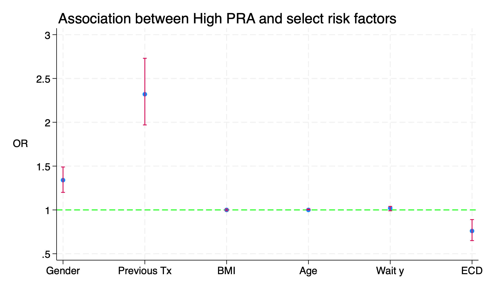
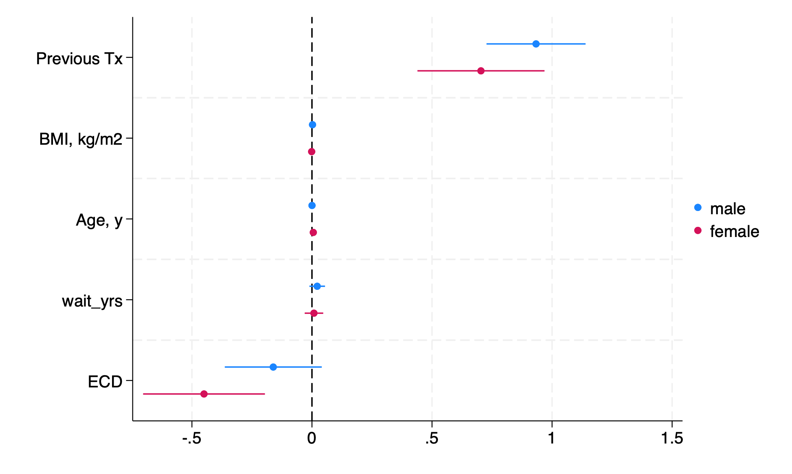

local v: di#
7.1 summary#
Lets recap the last 7 weeks in the spirit of a coda:
helpthe help command followed by any command you wish to further explore
e.g.,
h twoway
tokenizerepresent a numerical sequence (e.g. 1,2,3,…,6)
as a sequence of letters (e.g. a,b,c,…,z or A,B,C,…,Z)
quietlyhow to control what is displayed in the Stata terminal
Stata uses this e.g. with the neat regression output, and with profile.do
may very easily be changed to
noisilyif that suits your needs
delimitneat way to mimic
SASin defining the end of one “line” of codeespecially useful when dealing with graphical output and numerous graphing options
absolutely necessary if ever you wish to translate
.SAScode into.domay make accessible what otherwise were inaccessible datasets (e.g. NHANES)
rnormal()simulating parametric distributions
you may develop this idea on your own in the future
but we lay the foundation for this developement somewhere below
runiform()&rnormal()are the only distributions demonstrated thus farrbinomial()&rweibull()are introduced below in the context of time-to-event data
pwdpwd
di c(pwd)
di “text with embedded `c(pwd)’ for whatever reason”
global filepath c(pwd)
r(mean)creturn list
return list
ereturn list
bycollapse (
statistic) varname1, by(varname2)egen varname1=
statistic(varname2)above commands are equivalent in many regards
one distorts the data; the other doesn’t do so at all
useful created twoway plots or other graphical output
program definerigid, specific programs (without
syntax varlistorsyntax, options)flexible, generalizable programs (with
syntax [varlist],[options])
capturepreventing error results and an arrested script
Stata is finicky, pernickety and this little preface to a command may spare you untold misery
we’ve used it most frequently before
program define&log usingbut, notably, we’ve used it as a parsimonous variant in
syntax varlist if
twowaylast weeks class, which we didn’t cover because of
hw1-related issuesnotes have been updated to give you the best bang for your buck
lookout for the following very important issues:
workflow;
open science; and,
chatGPTs take on these.
on your own, please go walk step-by-step, command-by-command, through the
twowayexamples offeredthink about
if macro {conditional code-blocks and your deployment of this artifice in future, very powerful Stata scripts!
7.2 macros#
Today we’ll circle back to the method emplyed throughout this class:
defining macros
formatting them
embedding them in strings, text, figures, and excel
producing aesthically pleasing, richly informative output
7.3 science#
But to what end?
the advanced Stata Programming class answers that question thus:
open science
self-publication
collaboration
etc…
Show code cell source
import networkx as nx
import matplotlib.pyplot as plt
#import numpy as np
#import sklearn as skl
#
#plt.figure(figsize=[2, 2])
G = nx.DiGraph()
G.add_node("workflow", pos = (0,700) )
G.add_node("jupyter", pos = (-2000, 960) )
G.add_node("dofile", pos = (2000, 950) )
G.add_node("python ", pos = (-3000, 550) )
G.add_node("stata", pos = (3000, 550) )
G.add_node("build", pos = (-1900, 150) )
G.add_node("dyndoc", pos = (1900, 150) )
G.add_node("html", pos = (0,0))
G.add_node("push", pos = (0, -475))
G.add_node("ghp", pos = (0, -950))
G.add_edges_from([ ("jupyter","python "), ("dofile", "stata")])
G.add_edges_from([("python ", "build"), ("stata", "dyndoc") ])
G.add_edges_from([("build", "html"), ("dyndoc", "html")])
G.add_edges_from([("html","push")])
G.add_edges_from([("push","ghp")])
nx.draw(G,
nx.get_node_attributes(G, 'pos'),
with_labels=True,
font_weight='bold',
node_size = 4500,
node_color = "lightblue",
linewidths = 3)
ax= plt.gca()
ax.collections[0].set_edgecolor("#000000")
ax.set_xlim([-5000, 5000])
ax.set_ylim([-1000, 1000])
plt.show()

If at all you’ve enjoyed the conveniences brought forth by this classbook, then it would be remiss of me not to let you know from whence this book comes:
a data science class
python environment
jupyter notebooks
vscode by miscrosoft
dofiles
stata
In the advanced class we merge these ideas and publish our analyses and documentation (roll over, annotation) online via gh-pages!!!
7.4 embed#
Output
local macro: di %3.1f r(mean)*100
Text
di“You may embed amacroin text”
Figures
liney x, text(50 18 “macro”)
Excel
putexcelset filename, replaceputexcelB2=(”macro”)
Word
putdocx clearputdocx beginputdocxparagraphputdocxtextputdocx savedoc1.docx, replace
Dataset
postfileregcoeffs b1 b2 b3 using regoutput, replacepostfileregcoeffs () () ()postfileregcoeffs () () ()postcloseregcoeffsls *.dta//look for regoutput.dta in your pwd
Markdown
dyndoc
.md
.html
LaTeX
.css
JavaScript
7.4.5 postfile#
use transplants, clear
sum peak_pra,d
g highpra=peak_pra>r(p90)
sum wait_yrs,d
g longwait=wait_yrs>r(p50)
postutil clear
postfile pp xaxis str80 coef double(result lb ub pvalue) using betas.dta, replace
logistic highpra gender prev_ki bmi age wait_yrs don_ecd
local xaxis=1
qui foreach v of varlist gender prev_ki bmi age wait_yrs don_ecd {
lincom `v'
return list
local est: di %3.2f r(estimate)
local lb: di %3.2f r(lb)
local ub: di %3.2f r(ub)
local pval: di %3.2f r(p)
post pp (`xaxis') ("`v'") (`est') (`lb') (`ub') (`pval')
local xaxis=`xaxis' + 1
}
postclose pp
ls -l
use betas,clear
list
#delimit ;
twoway (scatter result xaxis)
(rcap lb ub xaxis,
scale(log)
yline(1,
lc(lime)
lp(dash)
)
legend(off)
xlab(
1 "Gender"
2 "Previous Tx"
3 "BMI"
4 "Age"
5 "Wait y"
6 "ECD"
)
ti("Association between High PRA and select risk factors", pos(11))
yti("OR",
orientation(horizontal)
)
xti("")
)
;
#delimit cr
graph export logistic.png,replace

7.4.6 alternative: coefplot#
use transplants, clear
sum peak_pra,d
g highpra=peak_pra>r(p90)
sum wait_yrs,d
g longwait=wait_yrs>r(p50)
logistic highpra prev_ki bmi age wait_yrs don_ecd if gender==0
est store male
logistic highpra prev_ki bmi age wait_yrs don_ecd if gender==1
est store female
if 0 {
lab var highpra "PRA>90th %"
lab var longwait "Wait>50th %"
lab var prev_ki "Previous Tx"
lab var bmi "BMI, kg/m2"
lab var age "Age, y"
lab var don_ecd "ECD"
}
coefplot male female, drop(_cons) xline(0)

7.6 counterfeiting#
A word on simulation:
7.6.1 rigor vs. fraud#
worth developing skills
making up data
imaginary scenarios
and why would one do that?
randomization (e.g. student -> TA in this class; study pop -> Rx group in clinical trial)
missing data (imputation)
bootstrap (the most robust way to estimate error for any statistic)
cryptography/disclosure risk
sample-size calculation (variant on missing data)
engineering, reverse engineering
counterfeiting reality for fraudulent purposes
adversarial training against sophisticated counterfeits
didactic purposes for any of the above :)
7.6.2 didactic#
qui {
clear
cls
if c(N) { //background
inspired by polack et al. nejm 2020
NEJM2020;383:2603-15
lets do some reverse engineering
aka simulate, generate data
from results: reversed process!!
}
if c(os)=="Windows" { //methods
lobal workdir "`c(pwd)'\"
}
else {
global workdir "`c(pwd)'/"
}
capture log close
log using ${workdir}simulation.log, replace
set seed 340600
set obs 37706
}
if c(N)==37706 { //simulation
#delimit ;
//row1
g bnt=rbinomial(1,.5);
lab define Bnt
0 "Placebo"
1 "BNT162b2" ;
label values bnt Bnt ;
tab bnt ;
//row2
gen female=rbinomial(1, .494);
label define Female
0 "Male"
1 "Female";
label values female Female;
tab female;
//row3
tempvar dem ;
gen `dem'=round(runiform(0,100),.1);
recode `dem'
(0/82.9=0)
(83.0/92.1=1)
(92.2/96.51=2)
(96.52/97.0=3)
(97.1/97.2=4)
(97.3/99.41=5)
(99.42/100=6)
, gen(race);
lab define Race
0 "White"
1 "Black or African American"
2 "Asian"
3 "Native American or Alsak Native"
4 "Native Hawaiian or other Pacific Islander"
5 "Multiracial"
6 "Not reported";
label values race Race;
tab race;
//row4
gen ethnicity=rbinomial(1,0.28);
tostring ethnicity, replace;
replace ethnicity="Latinx" if ethnicity=="1";
replace ethnicity="Other" if ethnicity=="0";
//row5
tempvar country;
gen `country'=round(runiform(0,100), .1);
recode `country'
(0/15.3=0)
(15.4/21.5=1)
(21.6/23.6=2)
(23.7/100=3)
, gen(country) ;
label define Country
0 "Argentina"
1 "Brazil"
2 "South Africa"
3 "United States";
label values country Country;
tab country;
//row7
gen age=(rt(_N)*9.25)+52 ;
replace age=runiform(16,91)
if !inrange(age,16,91);
summ age, d ;
local age_med=r(p50); local age_lb=r(min); local age_ub=r(max);
gen dob = d(27jul2020) -
(age*365.25) ;
gen dor = dob + age*365.25 + runiform(0,4*30.25);
//row6
gen over55=age>55 ; tab over55;
//row8
gen bmi=rbinomial(1, .351); tab bmi;
//figure 3
g days=rweibull(.7,17,0) if bnt==0 ;
g covid=rbinomial(1, 162/21728) if bnt==0 ;
replace days=rweibull(.4,.8,0) if bnt==1 ;
replace covid=rbinomial(1, 14/21772) if bnt==1;
//key dates
gen eft = dor + days;
//date formats
format dob %td; format dor %td; format eft %td;
//kaplan-meier curve
stset days, fail(covid) ;
sts graph,
by(bnt)
fail per(100)
tmax(119)
xlab(0(7)119)
ylab(0(.4)2.4,
angle(360)
format("%3.1f")
)
xti("Days after Dose 1")
legend(off)
text(
2.3 100
"Placebo",
col(navy)
)
text(
.5 100
"BNT162b2",
col(maroon)
) ;
graph export BNT162b2.png, replace ;
stcox bnt ;
drop _* age over55 days ;
g bnt_id=round(runiform(37,37+_N)) ;
compress ;
#delimit cr
//label variables
lab var bnt_id "Participant Identifier"
lab var bnt "Random treatment assignment"
lab var female "Gender at birth"
lab var race "Self-identified race"
lab var ethnicity "Hispanic ethnicity"
lab var country "Country where trial was conducted"
lab var dob "Date of birth"
lab var dor "Date of recruitment into BNT162b2 trial"
lab var eft "Date of exit from BNT162b2 trial"
lab var bmi "Obese"
lab var covid "Covid-19 status on eft date"
//label data
lab data "Safety and Efficacy of the BNT162b2 mRNA Covid-19 Vaccine"
describe
order bnt_id dob female race ethnicity country bmi bnt eft covid
*replace eft=. if eft>d(15dec2020) //some folks lost to followup
save BNT162b2, replace
}
log close
}
7.8 strings#
Handling strings such as:
data file names
generic drug names
all sorts of lists
We’ll review a script I wrote 4 years ago:
440 lines of code
Then compare it with an update this spring:
182 lines of code
Finally compare it with a variant i wrote in the summer:
139 lines of code
In brief, there is a fundamental transformation in:
aesthetics, legibility, & brevity
what is repetitive is codified in a loop
loops always utilizes macros and conditional statements
7.8.1 wild-type#
import excel "1-first gen antihisitamines.xlsx", sheet("de-duplicated list") clear
drop in 1/6
replace A = strtrim(A)
replace A=ustrupper(A)
rename A drug_gnn
gen class_gnn="antihist"
keep *_gnn
gen group=1
save 01_antihistamines, replace
import excel "2-antiparkinsonian agents.xlsx", sheet("De-duplicated list") clear
drop in 1/6
replace A = strtrim(A)
replace A=ustrupper(A)
rename A drug_gnn
gen class_gnn="antipark"
keep *_gnn
gen group=2
save 02_antiparkinsons,replace
import excel "3-Antispasmodics.xlsx", sheet("De-duplicated_list") clear
drop in 1/7
replace A = strtrim(A)
replace A=ustrupper(A)
rename A drug_gnn
gen class_gnn="antispasm"
keep *_gnn
keep if !missing(drug)
gen group=3
save 03_antispasmodics,replace
import excel "4-Antithrombotics", sheet("De-duplicated_results") clear
drop in 1/7
replace A = strtrim(A)
replace A=ustrupper(A)
rename A drug_gnn
gen class_gnn="antithromb"
keep *_gnn
keep if !missing(drug)
gen group=4
save 04_antithrombotics,replace
import excel "5-antiinfective agents", sheet("Sheet2") clear
drop in 1/8
replace A = strtrim(A)
replace A=ustrupper(A)
rename A drug_gnn
gen class_gnn="antiinfect"
keep *_gnn
keep if !missing(drug)
gen group=5
save 05_antiinfective,replace
import excel "6-Peripheral alpha-1 blockers", sheet("De-duplicated_results") clear
drop in 1/6
replace A = strtrim(A)
replace A=ustrupper(A)
rename A drug_gnn
gen class_gnn="pera1block"
keep *_gnn
keep if !missing(drug)
gen group=6
save 06_peripheralalpha1blockers,replace
import excel "7-Central alpha-agonists", sheet("de-duplicated_list") clear
replace A = strtrim(A)
replace A=ustrupper(A)
rename A drug_gnn
gen class_gnn="cena1ag"
keep *_gnn
keep if !missing(drug)
gen group=7
save 07_centralalpha1agonists,replace
import excel "8-Other CNS alpha-agonists", sheet("De-duplicated_list") clear
replace A = strtrim(A)
replace A=ustrupper(A)
rename A drug_gnn
gen class_gnn="otha1ag"
keep *_gnn
keep if !missing(drug)
gen group=8
save 08_otheralpha1agonists,replace
import excel "9-Antidepressants", sheet("De-duplicated_results") clear
drop in 1/8
replace A = strtrim(A)
replace A=ustrupper(A)
rename A drug_gnn
gen class_gnn="antidep"
keep *_gnn
keep if !missing(drug)
gen group=9
save 09_antidepressants,replace
import excel "10-Antipsychotic agents", sheet("De-duplicated_results") clear
drop in 1/8
replace A = strtrim(A)
replace A=ustrupper(A)
rename A drug_gnn
gen class_gnn="antipsy"
keep *_gnn
keep if !missing(drug)
gen group=10
save 10_antipsychotics,replace
import excel "11-Barbituates", sheet("De-duplicated_results") clear
drop in 1/6
replace A = strtrim(A)
replace A=ustrupper(A)
rename A drug_gnn
gen class_gnn="barb"
keep *_gnn
keep if !missing(drug)
gen group=11
save 11_barbiturates,replace
import excel "12-Benzodiazepine lists", sheet("Short-acting") clear
drop in 1/7
replace A = strtrim(A)
replace A=ustrupper(A)
rename A drug_gnn
gen class_gnn="benzoshort"
keep *_gnn
keep if !missing(drug)
tempfile benzoshort
save `benzoshort',replace
import excel "12-Benzodiazepine lists", sheet("Long-acting") clear
drop in 1/8
replace A = strtrim(A)
replace A=ustrupper(A)
rename A drug_gnn
gen class_gnn="benzolong"
keep *_gnn
keep if !missing(drug)
tempfile benzolong
save `benzolong',replace
import excel "12-Benzodiazepine lists", sheet("Unknown") clear
drop in 1/7
replace A = strtrim(A)
replace A=ustrupper(A)
rename A drug_gnn
gen class_gnn="benzounk"
keep *_gnn
keep if !missing(drug)
tempfile benzounk
save `benzounk',replace
use `benzoshort',clear
append using `benzolong'
append using `benzounk'
gen group=12
save 12_benzodiazepines,replace
import excel "13-Nonbenzodiazepines - Z-drugs", sheet("De-duplicated_results") clear
drop in 1/6
replace A = strtrim(A)
replace A=ustrupper(A)
rename A drug_gnn
gen class_gnn="nonbenzo"
keep *_gnn
keep if !missing(drug)
gen group=13
save 13_nonbenzodiazepines,replace
import excel "14-Ergoloid Mesylates", sheet("De-duplicated_results") clear
drop in 1/7
replace A = strtrim(A)
replace A=ustrupper(A)
rename A drug_gnn
gen class_gnn="ergot"
keep *_gnn
keep if !missing(drug)
gen group=14
save 14_ergoloids,replace
import excel "15-Androgens", sheet("De-duplicated_results") clear
drop in 1/7
replace A = strtrim(A)
replace A=ustrupper(A)
rename A drug_gnn
gen class_gnn="andro"
keep *_gnn
keep if !missing(drug)
gen group=15
save 15_androgens,replace
import excel "16-Estrogens", sheet("De-duplicated_results") clear
drop in 1/6
replace A = strtrim(A)
replace A=ustrupper(A)
rename A drug_gnn
gen class_gnn="estro"
keep *_gnn
keep if !missing(drug)
gen group=16
save 16_estrogens,replace
import excel "17-Growth hormone", sheet("De-duplicated_results") clear
drop in 1/7
replace A = strtrim(A)
replace A=ustrupper(A)
rename A drug_gnn
gen class_gnn="growth"
keep *_gnn
keep if !missing(drug)
gen group=17
save 17_growthhormones,replace
import excel "18-Insulin", sheet("De-duplicated_results") clear
drop in 1/8
replace A = strtrim(A)
replace A=ustrupper(A)
rename A drug_gnn
gen class_gnn="insulin"
keep *_gnn
keep if !missing(drug)
gen group=18
save 18_insulin,replace
import excel "19-Sulfonylureas", sheet("De-duplicated_results") clear
drop in 1/5
replace A = strtrim(A)
replace A=ustrupper(A)
rename A drug_gnn
gen class_gnn="urea"
keep *_gnn
keep if !missing(drug)
gen group=19
save 19_sulfonylureas,replace
import excel "20-38", sheet("20.Proton_Pump_Inhibitors") clear
drop in 1/1
replace A = strtrim(A)
replace A=ustrupper(A)
rename A drug_gnn
gen class_gnn="ppi"
keep *_gnn
keep if !missing(drug)
gen group=20
save 20_protonpumpinh,replace
import excel "20-38", sheet("21.non-selective NSAIDS") clear
drop in 1/1
replace A = strtrim(A)
replace A=ustrupper(A)
rename A drug_gnn
gen class_gnn="nsnsaids"
keep *_gnn
keep if !missing(drug)
gen group=21
save 21_nonselectnsaids,replace
import excel "20-38", sheet("22.Skeletal muscle relaxants") clear
drop in 1/2
replace A = strtrim(A)
replace A=ustrupper(A)
rename A drug_gnn
gen class_gnn="muscle"
keep *_gnn
keep if !missing(drug)
gen group=22
save 22_musclerelaxants,replace
import excel "20-38", sheet("23.non-DHP CCB") clear
drop in 1/1
replace A = strtrim(A)
replace A=ustrupper(A)
rename A drug_gnn
gen class_gnn="ccb"
keep *_gnn
keep if !missing(drug)
gen group=23
save 23_nondhpccb,replace
import excel "20-38", sheet("24.Thiazolidinediones") clear
drop in 1/1
replace A = strtrim(A)
replace A=ustrupper(A)
rename A drug_gnn
gen class_gnn="thiazo"
keep *_gnn
keep if !missing(drug)
gen group=24
save 24_thiazolidinediones,replace
import excel "20-38", sheet("25.Acetyl cholinesterase inhib") clear
drop in 1/1
replace A = strtrim(A)
replace A=ustrupper(A)
rename A drug_gnn
gen class_gnn="achblock"
keep *_gnn
keep if !missing(drug)
gen group=25
save 25_acetylcholinesteraseinh,replace
import excel "20-38", sheet("26.alpha-1 blockers") clear
drop in 1/1
replace A = strtrim(A)
replace A=ustrupper(A)
rename A drug_gnn
gen class_gnn="a1block"
keep *_gnn
keep if !missing(drug)
gen group=26
save 26_alpha1blockers,replace
import excel "20-38", sheet("27.ti-cyclic antidepressants") clear
drop in 1/1
replace A = strtrim(A)
replace A=ustrupper(A)
rename A drug_gnn
gen class_gnn="tca"
keep *_gnn
keep if !missing(drug)
gen group=27
save 27_tca,replace
import excel "20-38", sheet("28.corticosteroids") clear
drop in 1/1
replace A = strtrim(A)
replace A=ustrupper(A)
rename A drug_gnn
gen class_gnn="steroids"
keep *_gnn
keep if !missing(drug)
gen group=28
save 28_corticosteroids,replace
import excel "20-38", sheet("29.H2 receptor antagonists") clear
drop in 1/1
replace A = strtrim(A)
replace A=ustrupper(A)
rename A drug_gnn
gen class_gnn="h2ant"
keep *_gnn
keep if !missing(drug)
gen group=29
save 29_h2rblockers,replace
import excel "20-38", sheet("30.antiepileptics") clear
drop in 1/1
replace A = strtrim(A)
replace A=ustrupper(A)
rename A drug_gnn
gen class_gnn="antiepi"
keep *_gnn
keep if !missing(drug)
gen group=30
save 30_antiepileptics,replace
import excel "20-38", sheet("31.antiemetics") clear
drop in 1/1
replace A = strtrim(A)
replace A=ustrupper(A)
rename A drug_gnn
gen class_gnn="antieme"
keep *_gnn
keep if !missing(drug)
gen group=31
save 31_antiemetics,replace
import excel "20-38", sheet("32.NSAIDS") clear
drop in 1/1
replace A = strtrim(A)
replace A=ustrupper(A)
rename A drug_gnn
gen class_gnn="nsaid"
keep *_gnn
keep if !missing(drug)
gen group=32
save 32_nsaids,replace
import excel "20-38", sheet("33.Diuretics") clear
drop in 1/1
replace A = strtrim(A)
replace A=ustrupper(A)
rename A drug_gnn
gen class_gnn="diuretics"
keep *_gnn
keep if !missing(drug)
gen group=33
save 33_diuretics,replace
import excel "20-38", sheet("34.SNRIs") clear
drop in 1/1
replace A = strtrim(A)
replace A=ustrupper(A)
rename A drug_gnn
gen class_gnn="snri"
keep *_gnn
keep if !missing(drug)
gen group=34
save 34_snri,replace
import excel "20-38", sheet("35.SSRIs") clear
drop in 1/1
replace A = strtrim(A)
replace A=ustrupper(A)
rename A drug_gnn
gen class_gnn="ssri"
keep *_gnn
keep if !missing(drug)
gen group=35
save 35_ssri,replace
import excel "20-38", sheet("36.RAS Inhibitor") clear
drop in 1/2
replace A = strtrim(A)
replace A=ustrupper(A)
rename A drug_gnn
gen class_gnn="ras"
keep *_gnn
keep if !missing(drug)
gen group=36
save 36_rasinhibitors,replace
import excel "20-38", sheet("37.Opioids") clear
drop in 1/1
replace A = strtrim(A)
replace A=ustrupper(A)
rename A drug_gnn
gen class_gnn="opioids"
keep *_gnn
keep if !missing(drug)
gen group=37
save 37_opioids,replace
import excel "20-38", sheet("38.Anticholinergic") clear
drop in 1/1
replace A = strtrim(A)
replace A=ustrupper(A)
rename A drug_gnn
gen class_gnn="antich"
keep *_gnn
keep if !missing(drug)
gen group=38
save 38_anticholinergics,replace
7.8.2 alpha-variant#
qui {
qui {
clear
cls
if c(N) { //background
we compiled a comprehensive list of medications within
each of the potentially inapporpriate medication (pim)
classes in a systematic manner.
first, informaticists used micromedex, the control vocabularies of medline and embase, and medication websites to generate
a trade and generic medication name list.
second, this list was curated to allow medications with multiple
mechanisms of action to be represented in more than one pim class.
we removed pims with topical or ocular routes of administration.
the final list was **imported into stata** to query
medicare part d claims for pims...
}
if c(N)<1 { //methods
global workdir `c(pwd)'
if c(os)=="Windows" {
global workdir "$workdir\"
}
else {
global workdir "$workdir/"
}
#delimit ;
global catalog1
"1-first gen antihisitamines"
"2-antiparkinsonian agents"
"3-Antispasmodics"
"4-Antithrombotics"
"5-antiinfective agents"
"6-Peripheral alpha-1 blockers"
"7-Central alpha-agonists"
"8-Other CNS alpha-agonists"
"9-Antidepressants"
"10-Antipsychotic agents"
"11-Barbituates"
"12-Benzodiazepine lists"
"12-Benzodiazepine lists"
"12-Benzodiazepine lists"
"13-Nonbenzodiazepines - Z-drugs"
"14-Ergoloid Mesylates"
"15-Androgens"
"16-Estrogens"
"17-Growth hormone"
"18-Insulin"
"19-Sulfonylureas"
;
global catalog2
"20.Proton_Pump_Inhibitors"
"21.non-selective NSAIDS"
"22.Skeletal muscle relaxants"
"23.non-DHP CCB"
"24.Thiazolidinediones"
"25.Acetyl cholinesterase inhib"
"26.alpha-1 blockers"
"27.ti-cyclic antidepressants"
"28.corticosteroids"
"29.H2 receptor antagonists"
"30.antiepileptics"
"31.antiemetics"
"32.NSAIDS"
"33.Diuretics"
"34.SNRIs"
"35.SSRIs"
"36.RAS Inhibitor"
"37.Opioids"
"38.Anticholinergic";
global namelist1
01_antihistamines
02_antiparkinsons
03_antispasmodics
04_antithrombotics
05_antiinfective
06_peripheralalpha1blockers
07_centralalpha1agonists
08_otheralpha1agonists
09_antidepressants
10_antipsychotics
11_barbiturates
benzoshort
benzolong
benzounk
13_nonbenzodiazepines
14_ergoloids
15_androgens
16_estrogens
17_growthhormones
18_insulin
19_sulfonylureas;
global namelist2
20_protonpumpinh
21_nonselectnsaids
22_musclerelaxants
23_nondhpccb
24_thiazolidinediones
25_acetylcholinesteraseinh
26_alpha1blockers
27_tca
28_corticosteroids
29_h2rblockers
30_antiepileptics
31_antiemetics
32_nsaids
33_diuretics
34_snri
35_ssri
36_rasinhibitors
37_opioids
38_anticholinergics;
#delimit cr
capture log close
log using "${workdir}01_bc050523.log",replace
set max_memory .
}
if c(N)==0 { //results
local group=1
foreach class in "$catalog1" {
import excel "${workdir}`class'.xlsx", clear
drop in 1/6
replace A=strtrim(A)
replace A=ustrupper(A)
rename A drug_gnn
local class_tidy: di word("$namelist1",`group')
g class_gnn="`class_tidy'"
capture split class_gnn,p("_")
capture keep drug_gnn class_gnn2
if inrange(`group',1,11) {
g group=`group'
}
else {
g group=`group'-2
}
keep if !missing(drug)
local filename: di word("$namelist1",`group')
capture save "`filename'",replace
noi di "`filename'"
local group=`group'+1
}
use benzoshort,clear
append using benzolong
append using benzounk //debug
replace group=12
drop class_gnn
rename class_gnn1 class_gnn2
save 12_benzodiazepines,replace
}
clear
if c(N)==0 {
local group=1
foreach class in "$catalog2" {
import excel "${workdir}20-38.xlsx", /*
*/ sheet("`class'") clear
drop in 1/1
replace A=strtrim(A)
replace A=ustrupper(A)
rename A drug_gnn
local class_tidy: di word("$namelist2",`group')
g class_gnn="`class_tidy'"
capture split class_gnn,p("_")
capture keep drug_gnn class_gnn2
g group=`group'+19
keep if !missing(drug)
local filename: di word("$namelist2",`group')
capture save "`filename'",replace
noi di "`filename'"
local group=`group'+1
}
}
cls
rm benzoshort.dta
rm benzolong.dta
rm benzounk.dta
noi ls *.dta
timer list
log close
}
}
7.8.3. beta-variant#
qui {
qui {
clear
cls
if c(N) { //background
we compiled a comprehensive list of medications within
each of the potentially inapporpriate medication (pim)
classes in a systematic manner.
first, informaticists used micromedex, the control vocabularies of
medline and embase, and medication websites to generate
a trade and generic medication name list.
second, this list was curated to allow medications with multiple
mechanisms of action to be represented in more than one pim class.
we removed pims with topical or ocular routes of administration.
the final list was **imported into stata** to query
medicare part d claims for pims...
}
if c(N)<1 { //methods
global workdir `c(pwd)'
if c(os)=="Windows" {
global workdir "$workdir\"
}
else {
global workdir "$workdir/"
}
#delimit ;
global catalog
"1-first gen antihisitamines"
"2-antiparkinsonian agents"
"3-Antispasmodics"
"4-Antithrombotics"
"5-antiinfective agents"
"6-Peripheral alpha-1 blockers"
"7-Central alpha-agonists"
"8-Other CNS alpha-agonists"
"9-Antidepressants"
"10-Antipsychotic agents"
"11-Barbituates"
"12-Benzodiazepine lists"
"12-Benzodiazepine lists"
"12-Benzodiazepine lists"
"13-Nonbenzodiazepines - Z-drugs"
"14-Ergoloid Mesylates"
"15-Androgens"
"16-Estrogens"
"17-Growth hormone"
"18-Insulin"
"19-Sulfonylureas"
"20.Proton_Pump_Inhibitors"
"21.non-selective NSAIDS"
"22.Skeletal muscle relaxants"
"23.non-DHP CCB"
"24.Thiazolidinediones"
"25.Acetyl cholinesterase inhib"
"26.alpha-1 blockers"
"27.ti-cyclic antidepressants"
"28.corticosteroids"
"29.H2 receptor antagonists"
"30.antiepileptics"
"31.antiemetics"
"32.NSAIDS"
"33.Diuretics"
"34.SNRIs"
"35.SSRIs"
"36.RAS Inhibitor"
"37.Opioids"
"38.Anticholinergic";
#delimit cr
capture log close
log using "${workdir}01_bc050523.log",replace
set max_memory .
}
if c(N)==0 { //results
local group=1
foreach class in "$catalog" {
if inrange(`group',1,9) {
import excel "${workdir}`class'.xlsx", clear
local class_tidy: di lower(substr("`class'",3,.))
g class_gnn="0`group'_`class_tidy'"
capture keep class_gnn
g group=`group'
keep if !missing(class_gnn)
capture save "0`group'_`class_tidy'",replace
noi di "0`group'_`class_tidy'"
local group=`group'+1
}
else if inrange(`group',10,11) {
import excel "${workdir}`class'.xlsx", clear
local class_tidy: di lower(substr("`class'",4,.))
g class_gnn="`group'_`class_tidy'"
capture keep class_gnn
g group=`group'
keep if !missing(class_gnn)
capture save "`group'_`class_tidy'",replace
noi di "`group'_`class_tidy'"
local group=`group'+1
}
else if inrange(`group',12,21) {
import excel "${workdir}`class'.xlsx", clear
local class_tidy: di lower(substr("`class'",4,.))
local group2=`group'-2
g class_gnn="`group2'_`class_tidy'"
capture keep class_gnn
g group=`group2'
keep if !missing(class_gnn)
capture save "`group2'_`class_tidy'",replace
noi di "`group2'_`class_tidy'"
local group=`group'+1
}
else {
import excel "${workdir}20-38.xlsx", /*
*/ sheet("`class'") clear
local class_tidy: di lower(substr("`class'",4,.))
local group2=`group'-2
g class_gnn="`group2'_`class_tidy'"
capture keep class_gnn
g group=`group2'
keep if !missing(class_gnn)
capture save "`group2'_`class_tidy'",replace
noi di "`group2'_`class_tidy'"
local group=`group'+1
}
}
}
clear
forva i=10/12 {
append using "`i'_benzodiazepine lists"
rm "`i'_benzodiazepine lists.dta"
}
replace class_gnn="12_benzodiazepine"
replace group=12
save 12_benzodiazepines,replace
noi ls *.dta
log close
}
}
7.8.4 excel#
Download these .xlsx files into the pwd for the above scripts to work:
7.8.5 commands#
strposwordstrlenregexm
7.8.5.1 strpos#
di "$S_TIME"
clear
set more off
tempfile pde_2013 pde_2014 pde2013bc pde2014bc
use usrds_id srvc_dt gnn using "/dcs01/igm/segevlab/data/usrds2015/claims/pd/pde2013",clear
save `pde_2013',replace
use usrds_id srvc_dt gnn using "/dcs01/igm/segevlab/data/usrds2016/claims/pd/pde2014",clear
save `pde_2014',replace
local year "y=2013/2014"
forvalues `year' {
capture use `pde_`y'',clear
if _rc==0 {
di "processing pde_`y'.dta ..."
gen antihist16=(strpos(gnn,"BROMPHENIRAMINE")!=0)
gen antihist19=(strpos(gnn,"CARBINOXAMINE")!=0)
gen antihist26=(strpos(gnn,"CHLORPHENIRAMINE")!=0)
gen antihist31=(strpos(gnn,"CLEMASTINE")!=0)
gen antihist36=(strpos(gnn,"CYPROHEPTADINE")!=0)
gen antihist39=(strpos(gnn,"DEXBROMPHENIRAMINE")!=0)
gen antihist40=(strpos(gnn,"DEXCHLORPHENIRAMINE")!=0)
gen antihist43=(strpos(gnn,"DIMENHYDRINATE")!=0)
gen antihist47=(strpos(gnn,"DIPHENHYDRAMINE")!=0)
gen antihist51=(strpos(gnn,"DOXYLAMINE")!=0)
gen antihist65=(strpos(gnn,"HYDROXYZINE")!=0)
gen antihist77=(strpos(gnn,"MECLIZINE")!=0)
gen antihist101=(strpos(gnn,"PROMETHAZINE")!=0)
gen antihist105=(strpos(gnn,"PYRILAMINE")!=0)
gen antihist127=(strpos(gnn,"TRIPROLIDINE")!=0)
gen antihist_rx=( ///
antihist16+ ///
antihist19+ ///
antihist26+ ///
antihist31+ ///
antihist36+ ///
antihist39+ ///
antihist40+ ///
antihist43+ ///
antihist47+ ///
antihist51+ ///
antihist65+ ///
antihist77+ ///
antihist101+ ///
antihist105+ ///
antihist127 ///
>0)
keep usrds_id srvc_dt antihist_rx
duplicates drop
quietly compress
save `pde`y'bc', replace
}
}
forvalues `year' {
capture append using `pde`y'bc'
}
save 01_antihistamines_expR.dta,replace
di "$S_TIME"
7.8.5.2 others#
//explore these commands sequentially, on your own
use transplants, clear
list extended_dgn in 1/5, clean
disp word("Hello, is there anybody in there?",4)
list extended_dgn if word(ext, 5) != "", clean noobs
disp strlen("Same as it ever was")
list extended_dgn if strlen(ext)< 6, clean
assert regexm("Earth", "art")
assert !regexm("team", "I")
tab ext if regexm(ext, "HTN")
list ext if regexm(ext, "^A")
//starts with A
list ext if regexm(ext, "X$")
//ends with X
tab ext if regexm(ext, "HIV.*Y")
//contains "HIV", then some otherstuff, then Y
7.9 dates#
disp %td 19400 11feb2013
disp %td 366 01jan1961
disp %td -5 27dec1959
use transplants, clear
gen oneweek = transplant_date+7
list transplant_date oneweek in 1/3
format %td oneweek
list transplant_date oneweek in 1/3
disp td(04jul1976)
disp td(5may2021)
disp mdy(7,4,1976)
disp mdy(5,5,2021)
disp date("August 15, 1969", "MDY")
disp "$S_DATE"
di c(current_date)